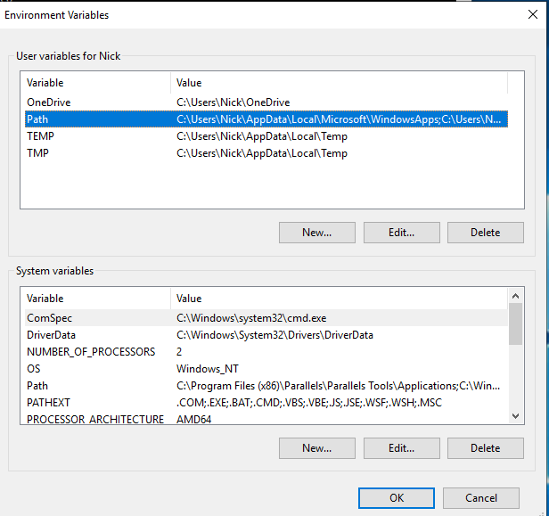
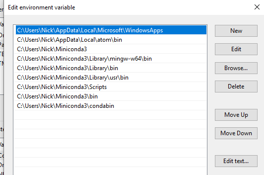

The Command Line on Windows / Installing Bash¶
As dicussed in Command Line Basics, there are actually several programs available that allow users to interact with their operating system via text commands instead of using their mouse to click on icons. On this site, we’ll focus on learning bash, because it’s so ubiquitous in the data science space. Why? Mostly because it is the default command line tool for Linux operating systems, and while you may not know it, most of the computers you interact with on a
daily basis run Linux. Your personal computer may be a mac (which also uses bash by default) or a windows computer, but the computers that run nearly every website you visit, manage your email, run those ticket kiosk you see at the airport, etc. are almost all running on Linux. Moreover, if your data science career ever requires you to use computers in the cloud (amazon cloud services, or just an extra powerful server you company or university has for really serious computational work), it
will run Linux. So there’s a lot of good reasons to learn bash.
But: bash is not the default on windows, so on this page, I’ll show you how to set up a system that lets you work with bash on your windows computer. Note that because bash is not the default windows tool, there will be a few little wrinkles in how this is done, and it will never work quite as seamlessly as the default windows command line tools (PowerShell and CMD).
If you are a passionate windows user or someone who plans to only use windows, you are probably better off learning to use the default windows command line tools!
Install Cmder¶
To get a good bash interface in windows, we just need to install Cmder!. Make sure to select the Full Install (or you won’t get Bash). Note this will also install git, which we discuss elsewhere on this site.
Once installed, you’ll have a new program called Cmder available! By default, Cmder is a kinda of hybrid interface that lets you use most commands people use in bash and the commands people use when working with the default Windows command line tool (CMD). This is nice for people with some windows command line experience, but it does mean that Cmder doesn’t quite work like bash.
With that in mind, for the moment I would suggest using Cmder in pure bash mode by clicking on Settings (the three horizontal bars on the bottom right), then changing the “startup task” to {bash::bash} (see pic below). You can always change this later once you’re comfortable with bash, or open a single window in Cmder’s default mode by clicking the + in the bottom right and selecting the {cmd::Cmder} option.

If you use Anaconda / Miniconda for Python¶
Reinstalling¶
The easiest way to get Anaconda to work well with Cmder is to delete your current installation, re-install anaconda, and select “Add to PATH variable” during installation (despite the warning it gives). If you have anything less than a super-developed complicated Anaconda installation with lots of environments (and if you don’t know what that means, you don’t!)), I would suggest you just delete and re-install Anaconda after you’ve installed Cmder.
If you really want to keep your Anaconda install¶
If you use Python and manage your installation using anaconda or miniconda (which you probably should be doing…), there is a small trick you have to do to make conda and python accessible from the Cmder terminal:
Go to Control Panel, then System and Security, click System, then on the left click Advanced System Settings, then in the pop-up click the Environment Variables... button.
Double click on the PATH variable line:

Then add a set of new entries, all of which start with the path to YOUR anaconda or miniconda installation:
C:\path_to_your_conda_install_folder\
C:\path_to_your_conda_install_folder\Library\mingw-w64\bin
C:\path_to_your_conda_install_folder\Library\bin
C:\path_to_your_conda_install_folder\Library\usr\bin
C:\path_to_your_conda_install_folder\Scripts
C:\path_to_your_conda_install_folder\bin
C:\path_to_your_conda_install_folder\condabin
Personally, I used miniconda, so the path to my installation is C:\Users\Nick\Miniconda3, and so after adding these files, my list looks like:

After you’re done, if you open a new session of Cmder (you have to close any open windows and open new ones), you should be able to type conda and get your usual conda functionality, or type python and get your normal python functionality!